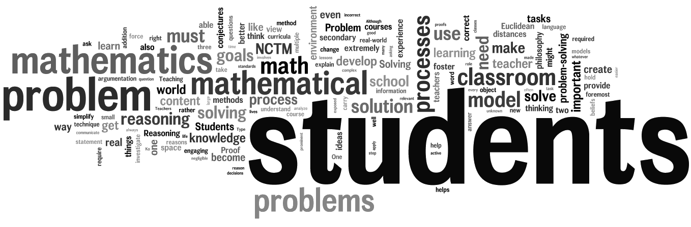

Teaching is my journey.
I did not realize I wanted to teach secondary school math until about halfway through college. Leadership skills are qualities that I never knew I had until I started examining my academic career, and I am constantly preparing myself for becoming a better teacher. I love the feeling of insight (the sudden realization of a solution) and I’ve discovered that I get a satisfaction from seeing others gain insight too. I want to make a huge difference in this world—and I believe I can—by educating the leaders of our future.
My educational interests include reading and learning about how learners solve problems and make decisions, think analytically and rigorously, construct their own mathematical understanding, and truly appreciate the value of mathematics. I’m great with kids and I enjoy watching the learning process unfold. My biggest goal as a math teacher is to motivate students to develop their mathematical abilities and to see the relevance of mathematics in a society with ever-increasing emphases on science, technology, and engineering.
I believe that meaningful learning requires an engaging and interactive environment. Cooperation, collaboration, conversation, and competition are key to effective student learning. In the classroom, information and knowledge will flow in many directions around the room among teacher, student, and environment. Students are encouraged to offer their background knowledge, experiences, cultures, beliefs, values, and opinions to a mathematical learning community.
Philosophies
Education Courses
Teaching in Secondary Schools
Advanced Curriculum & Instruction
Content Area Reading
Research in Assessment
Diversity & Equity in Mathematics Education
Schooling in American Society
Educating Exceptional Learners
External Links
- Teach For America | What We Do
Teach For America is building the movement to eliminate educational inequality by enlisting our nation’s most promising future leaders in the effort.
- ReadWriteThink | Printouts
ReadWriteThink, produced by the National Council of Teachers of English and the International Reading Association, offers a collection of its best printable sheets from assessments to organizers—all of them classroom-tested and easy to use.
My Blogs
- Research in Mathematics Education
This blog contains my summaries of and reactions to published research pertaining to mathematics education.
- Field Studies in Mathematics Education
This blog contains my accounts and experiences of tutoring college students and observing high school math classrooms as a pre-service teacher.
Note:Due to privacy issues, this blog is restricted from the public. To view, please request to be added to the access list. You must have a Google account.